Soluciones de clase
Las mejores prácticas del mundo frente a los grandes problemas, traídas a Cartago: doce problemas y 28 soluciones de clase con su evidencia.
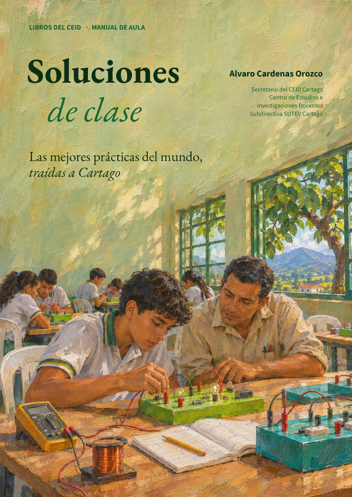
Leer el libro completo
PDF · 152 págs. · 5,8 MB- 17Enseñar desde lo que cada estudiante ya sabe
- 20Mostrar, practicar juntos y recordar
- 23Saber qué aprendió cada uno y decirle cómo mejorar
- 30Nivelar con tutores
- 33Un adulto que no lo suelte
- 36Mostrar con datos lo que vale estudiar
- 43Enseñar a manejar la rabia y a resolver conflictos
- 45Convertir las normas en un juego de equipo
- 47Normas, rutinas y consecuencias que no humillan
- 52Enseñar a reconocer y manejar las emociones
- 55Detener el acoso con toda la escuela
- 58Hablar de salud mental con todo el grado
- 64Enseñar a cuidar el propio cuerpo y a pedir ayuda
- 67Ser el adulto al que se le puede contar
- 74Enseñar sexualidad en serio, año tras año
- 77Mirar el futuro con datos y con un adulto al lado
- 84Desmontar el «todos lo hacen» y practicar cómo decir no
- 88Prevenir desde primero de primaria
- 95Preparar a la escuela antes de que tiemble
- 99Mapear el riesgo de la propia escuela con datos abiertos
- 106Investigar el agua y el calor de Cartago con datos
- 110Del dato a la acción
- 117Salir de la página para saber quién habla
- 120Vacunar contra la manipulación antes de que llegue
- 126Pistas, no respuestas
- 129Que la IA no firme por el estudiante
- 135Hacer las cuentas de la vida real
- 138Estudiar la vereda para transformarla
Primera edición, noviembre de 2026. Cada capítulo parte de un problema de Cartago, con sus cifras oficiales, y propone soluciones de clase que se pueden aplicar la semana siguiente. Cada solución dice qué hacer en el aula, qué tan sólida es la evidencia, cómo saber si funcionó y qué no hacer.
Lo que reúne el manual
- Doce problemas de Cartago en cuatro partes: aprender y quedarse, convivir y cuidarse, cuidar el territorio y pensar el futuro.
- Veintiocho soluciones de clase, cada una con su sello de evidencia (sólida, prometedora o débil) y su versión para escuelas sin conectividad o rurales.
- Lo que no funciona aunque sea popular, una guía para saber si una solución funcionó y las rutas de atención de Cartago.
Cómo citar
Cardenas Orozco, A. (2026). Soluciones de clase: Las mejores prácticas del mundo, traídas a Cartago. CEID Cartago, Subdirectiva SUTEV Cartago. https://doi.org/10.5281/zenodo.24043505
Licencia CC BY-SA 4.0. Las cifras y la evidencia se consultaron en fuentes oficiales y académicas hasta el 6 de noviembre de 2026. Este manual se preparó con apoyo de inteligencia artificial generativa (Claude, de Anthropic); cada dato, cifra y cita se contrastó con su fuente.
En este libro
42 apartados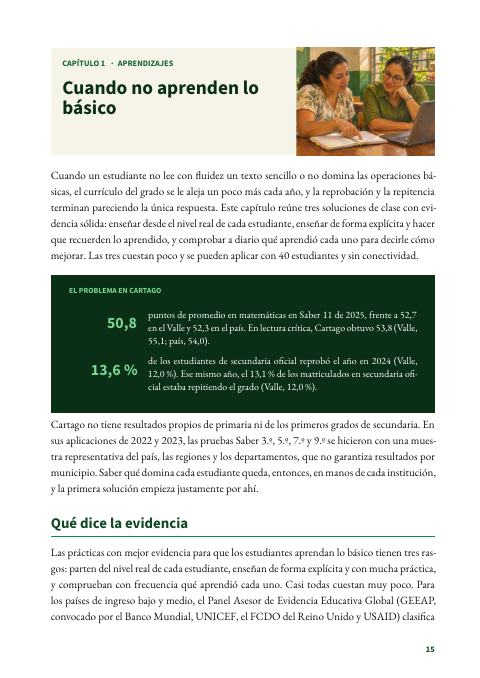
Pág. 15 · 3 págs.Cuando no aprenden lo básicoAlvaro Cardenas OrozcoCuando un estudiante no lee con fluidez un texto sencillo o no domina las operaciones básicas, el currículo del grado se le aleja un poco más cada año, y la reprobación y la repitencia terminan pareciendo la única respuesta.Leer →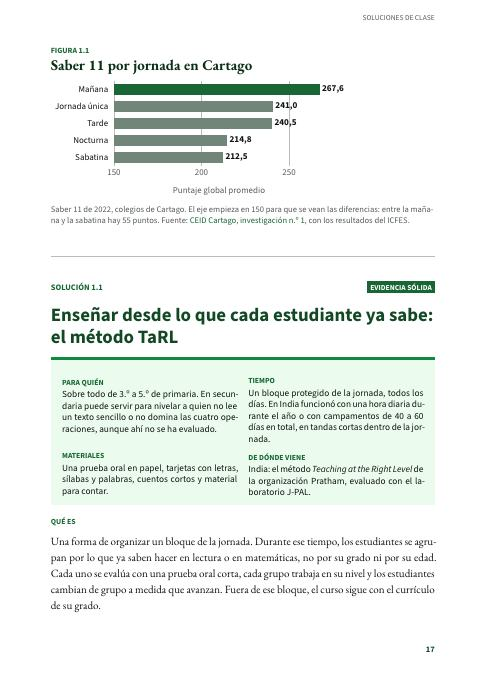
Pág. 17 · 4 págs.Enseñar desde lo que cada estudiante ya sabe: el método TaRLAlvaro Cardenas OrozcoUna forma de organizar un bloque de la jornada. Durante ese tiempo, los estudiantes se agrupan por lo que ya saben hacer en lectura o en matemáticas, no por su grado ni por su edad. Sobre todo de 3.º a 5.º de primaria. Evidencia sólida.Leer →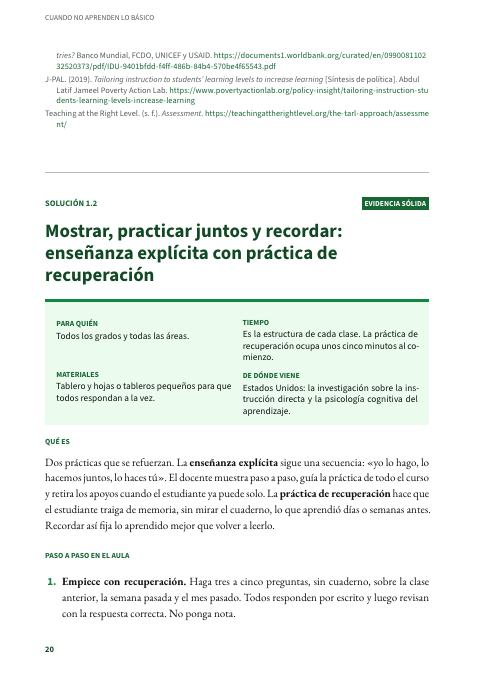
Pág. 20 · 4 págs.Mostrar, practicar juntos y recordar: enseñanza explícita con práctica de recuperaciónAlvaro Cardenas OrozcoDos prácticas que se refuerzan. Todos los grados y todas las áreas. Evidencia sólida.Leer →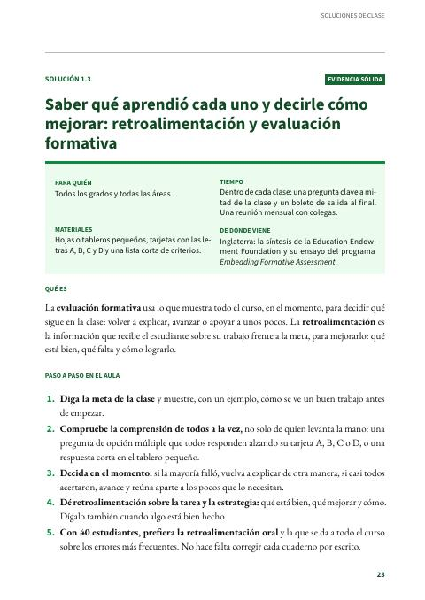
Pág. 23 · 3 págs.Saber qué aprendió cada uno y decirle cómo mejorar: retroalimentación y evaluación formativaAlvaro Cardenas OrozcoLa evaluación formativa usa lo que muestra todo el curso, en el momento, para decidir qué sigue en la clase. Todos los grados y todas las áreas. Evidencia sólida.Leer →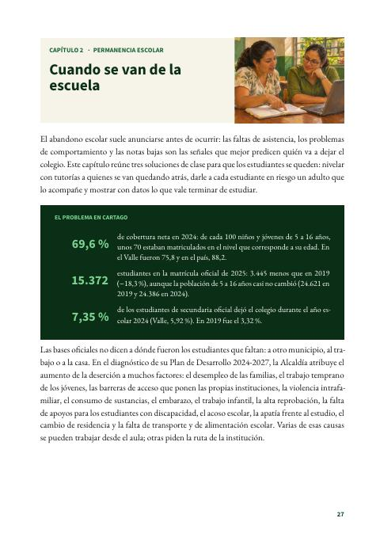
Pág. 27 · 4 págs.Cuando se van de la escuelaAlvaro Cardenas OrozcoEl abandono escolar suele anunciarse antes de ocurrir.Leer →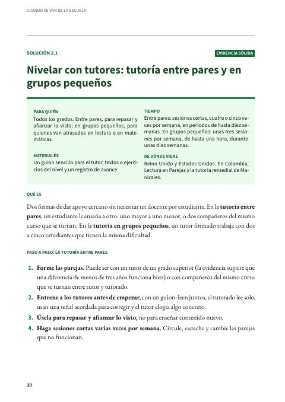
Pág. 30 · 4 págs.Nivelar con tutores: tutoría entre pares y en grupos pequeñosAlvaro Cardenas OrozcoDos formas de dar apoyo cercano sin necesitar un docente por estudiante. Todos los grados. Evidencia sólida.Leer →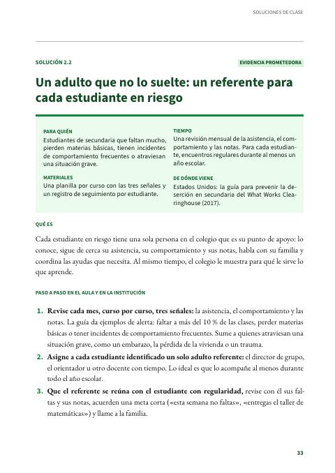
Pág. 33 · 4 págs.Un adulto que no lo suelte: un referente para cada estudiante en riesgoAlvaro Cardenas OrozcoCada estudiante en riesgo tiene una sola persona en el colegio que es su punto de apoyo. Estudiantes de secundaria que faltan mucho, pierden materias básicas, tienen incidentes de comportamiento frecuentes o atraviesan una situación grave. Evidencia prometedora.Leer →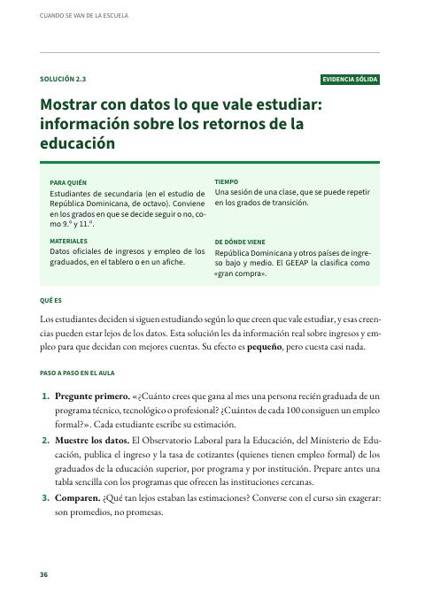
Pág. 36 · 3 págs.Mostrar con datos lo que vale estudiar: información sobre los retornos de la educaciónAlvaro Cardenas OrozcoLos estudiantes deciden si siguen estudiando según lo que creen que vale estudiar, y esas creencias pueden estar lejos de los datos. Estudiantes de secundaria (en el estudio de República Dominicana, de octavo). Evidencia sólida.Leer →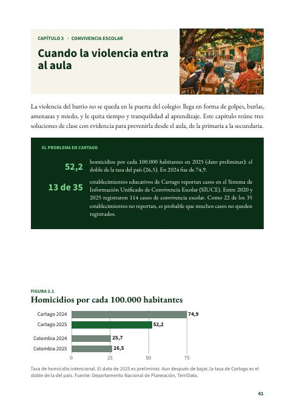
Pág. 41 · 3 págs.Cuando la violencia entra al aulaAlvaro Cardenas OrozcoLa violencia del barrio entra al colegio. Qué dice la evidencia, qué no funciona y qué hacer cuando ya hay un caso.Leer →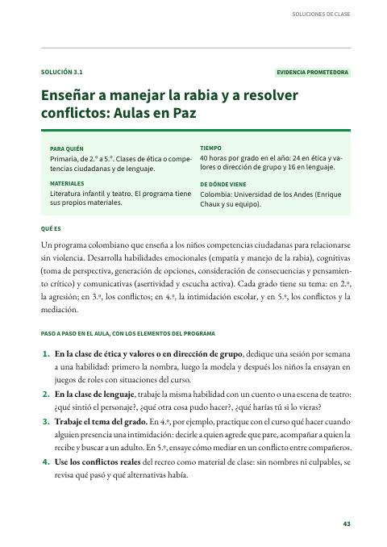
Pág. 43 · 3 págs.Enseñar a manejar la rabia y a resolver conflictos: Aulas en PazAlvaro Cardenas OrozcoUn programa colombiano de competencias ciudadanas para primaria, con un tema por grado. Evidencia prometedora.Leer →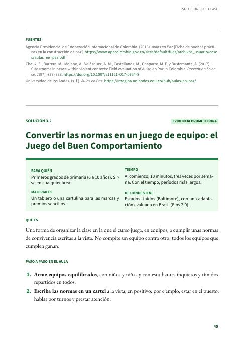
Pág. 45 · 3 págs.Convertir las normas en un juego de equipo: el Juego del Buen ComportamientoAlvaro Cardenas OrozcoEquipos, normas a la vista y marcas en el tablero para los primeros grados. Evidencia prometedora.Leer →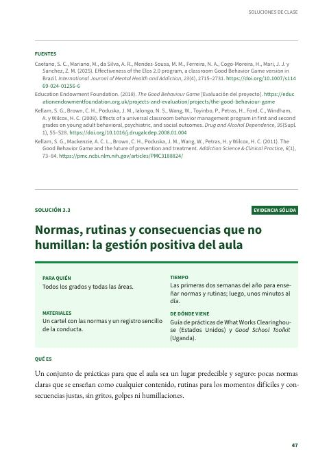
Pág. 47 · 3 págs.Normas, rutinas y consecuencias que no humillan: la gestión positiva del aulaAlvaro Cardenas OrozcoPocas normas enseñadas, rutinas y consecuencias justas, para todos los grados. Evidencia sólida.Leer →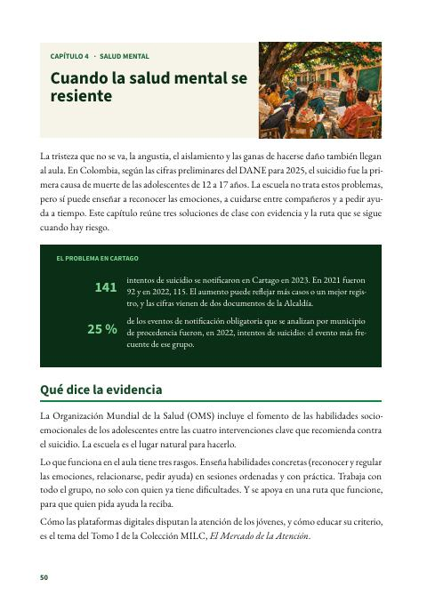
Pág. 50 · 3 págs.Cuando la salud mental se resienteAlvaro Cardenas OrozcoLa tristeza que no se va, la angustia, el aislamiento y las ganas de hacerse daño también llegan al aula.Leer →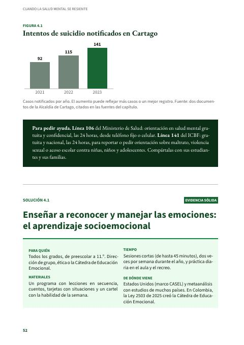
Pág. 52 · 4 págs.Enseñar a reconocer y manejar las emociones: el aprendizaje socioemocionalAlvaro Cardenas OrozcoLa enseñanza explícita de las habilidades para entender y manejar las propias emociones, relacionarse con los demás y tomar decisiones. Todos los grados, de preescolar a 11.º. Evidencia sólida.Leer →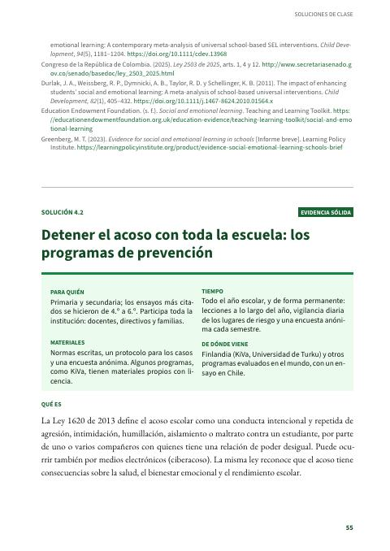
Pág. 55 · 4 págs.Detener el acoso con toda la escuela: los programas de prevenciónAlvaro Cardenas OrozcoProgramas en los que toda la escuela, y no solo el aula, trabaja para prevenir y detener el acoso. Primaria y secundaria. Evidencia sólida.Leer →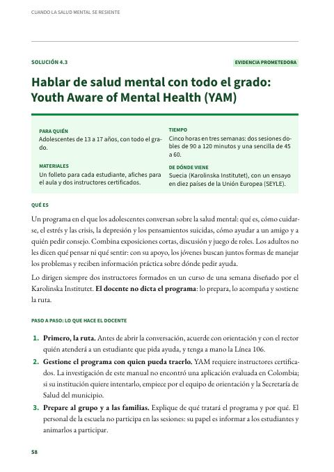
Pág. 58 · 3 págs.Hablar de salud mental con todo el grado: Youth Aware of Mental Health (YAM)Alvaro Cardenas OrozcoUn programa en el que los adolescentes conversan sobre la salud mental. Adolescentes de 13 a 17 años, con todo el grado. Evidencia prometedora.Leer →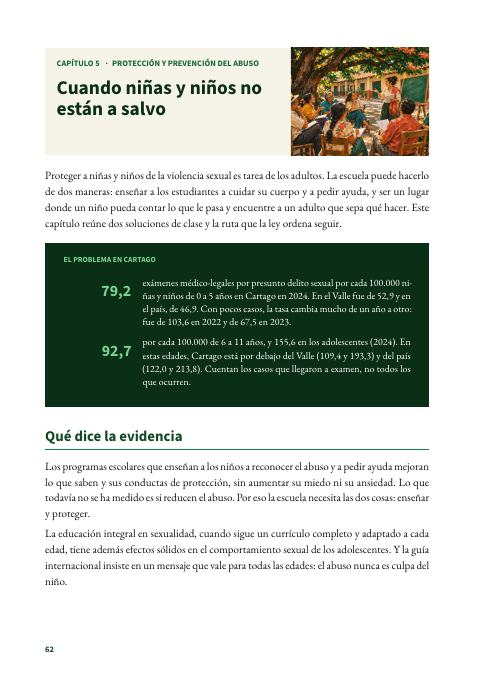
Pág. 62 · 3 págs.Cuando niñas y niños no están a salvoAlvaro Cardenas OrozcoProteger a niñas y niños de la violencia sexual es tarea de los adultos.Leer →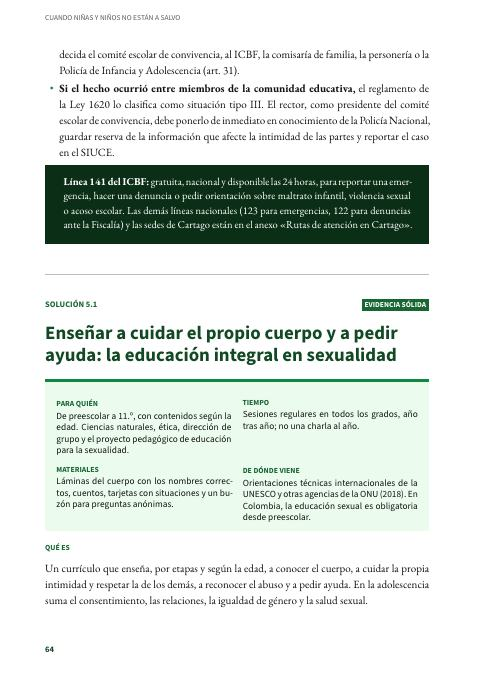
Pág. 64 · 4 págs.Enseñar a cuidar el propio cuerpo y a pedir ayuda: la educación integral en sexualidadAlvaro Cardenas OrozcoUn currículo que enseña, por etapas y según la edad, a conocer el cuerpo, a cuidar la propia intimidad y respetar la de los demás, a reconocer el abuso y a pedir ayuda. De preescolar a 11.º, con contenidos según la edad. Evidencia sólida.Leer →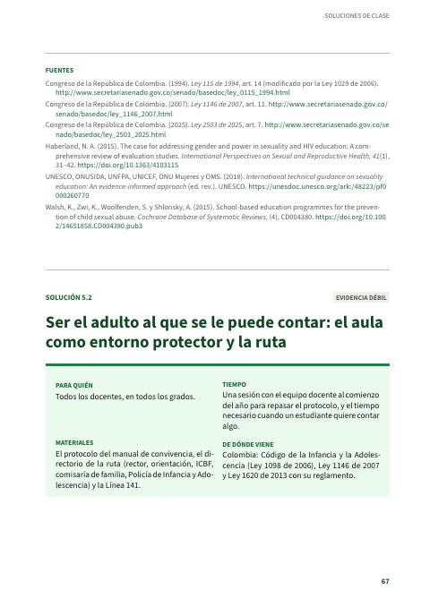
Pág. 67 · 4 págs.Ser el adulto al que se le puede contar: el aula como entorno protector y la rutaAlvaro Cardenas OrozcoUn aula protectora es aquella en la que los estudiantes saben que pueden contarle a un adulto lo que les pasa, y ese adulto sabe qué hacer. Todos los docentes, en todos los grados. Evidencia débil.Leer →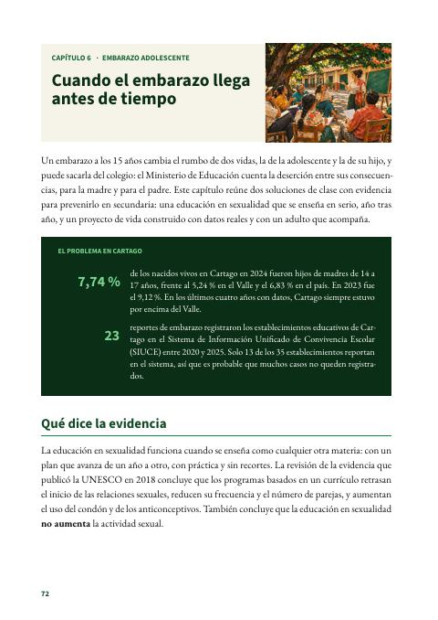
Pág. 72 · 3 págs.Cuando el embarazo llega antes de tiempoAlvaro Cardenas OrozcoUn embarazo a los 15 años cambia el rumbo de dos vidas, la de la adolescente y la de su hijo, y puede sacarla del colegio.Leer →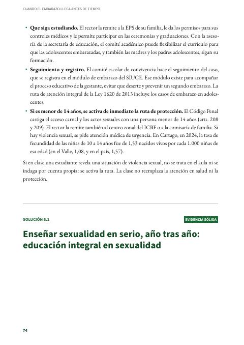
Pág. 74 · 4 págs.Enseñar sexualidad en serio, año tras año: educación integral en sexualidadAlvaro Cardenas OrozcoUn plan de clases sobre sexualidad que se enseña durante varios años, con información científica y adecuada a la edad. Secundaria y media, de 6.º a 11.º. Evidencia sólida.Leer →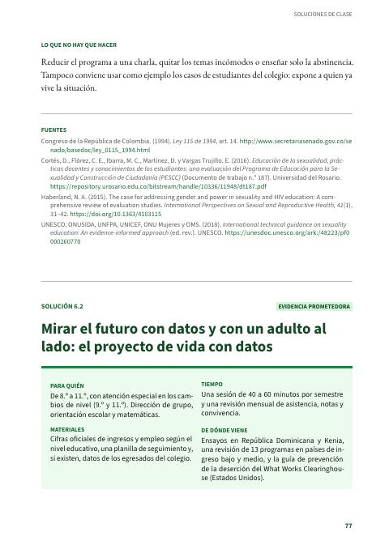
Pág. 77 · 4 págs.Mirar el futuro con datos y con un adulto al lado: el proyecto de vida con datosAlvaro Cardenas OrozcoUna manera de trabajar el proyecto de vida con información real y no solo con buenos deseos. De 8.º a 11.º, con atención especial en los cambios de nivel (9.º y 11.º). Evidencia prometedora.Leer →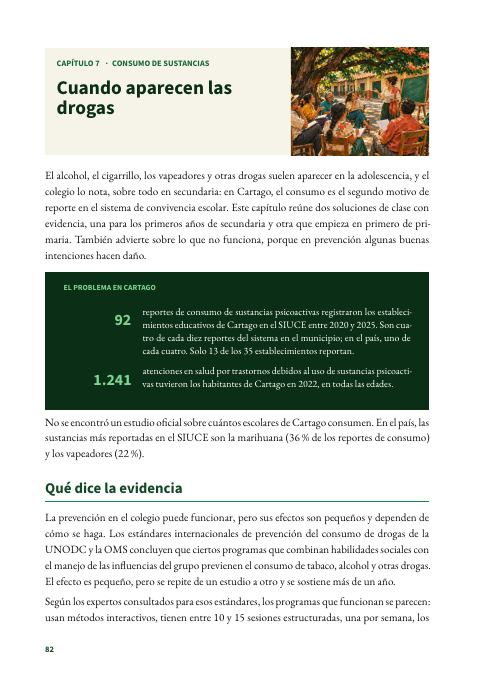
Pág. 82 · 3 págs.Cuando aparecen las drogasAlvaro Cardenas OrozcoEl alcohol, el cigarrillo, los vapeadores y otras drogas suelen aparecer en la adolescencia, y el colegio lo nota, sobre todo en secundaria.Leer →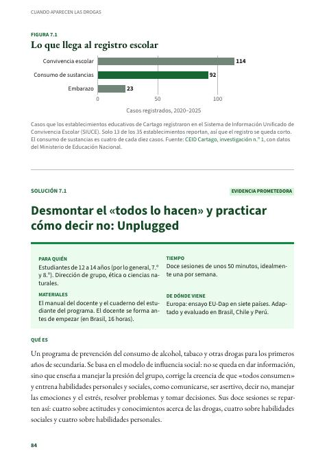
Pág. 84 · 5 págs.Desmontar el «todos lo hacen» y practicar cómo decir no: UnpluggedAlvaro Cardenas OrozcoUn programa de prevención del consumo de alcohol, tabaco y otras drogas para los primeros años de secundaria. Estudiantes de 12 a 14 años (por lo general, 7.º y 8.º). Evidencia prometedora.Leer →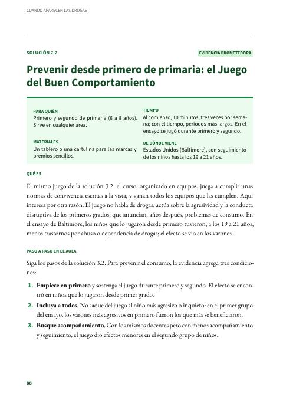
Pág. 88 · 3 págs.Prevenir desde primero de primaria: el Juego del Buen ComportamientoAlvaro Cardenas OrozcoEl mismo juego de la solución 3.2. Primero y segundo de primaria (6 a 8 años). Evidencia prometedora.Leer →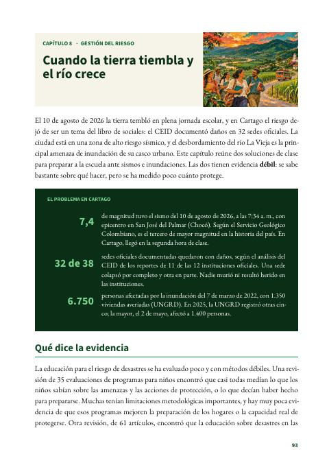
Pág. 93 · 3 págs.Cuando la tierra tiembla y el río creceAlvaro Cardenas OrozcoEl 10 de agosto de 2026 la tierra tembló en plena jornada escolar, y en Cartago el riesgo dejó de ser un tema del libro de sociales.Leer →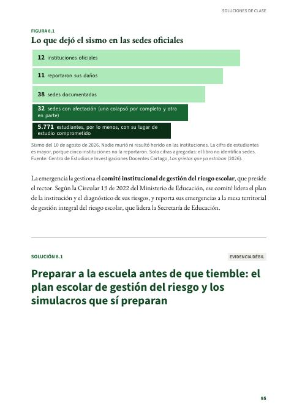
Pág. 95 · 5 págs.Preparar a la escuela antes de que tiemble: el plan escolar de gestión del riesgo y los simulacros que sí preparanAlvaro Cardenas OrozcoEl plan de gestión integral del riesgo escolar es el documento con el que la institución conoce sus riesgos, los reduce y se prepara para responder. Toda la institución, con su comité de gestión del riesgo escolar. Evidencia débil.Leer →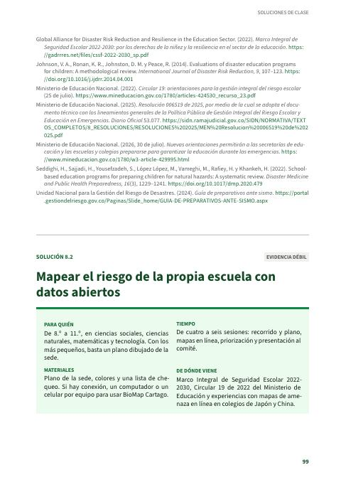
Pág. 99 · 5 págs.Mapear el riesgo de la propia escuela con datos abiertosAlvaro Cardenas OrozcoEl curso construye el mapa de riesgos de su sede y de su barrio. De 8.º a 11.º, en ciencias sociales, ciencias naturales, matemáticas y tecnología. Evidencia débil.Leer →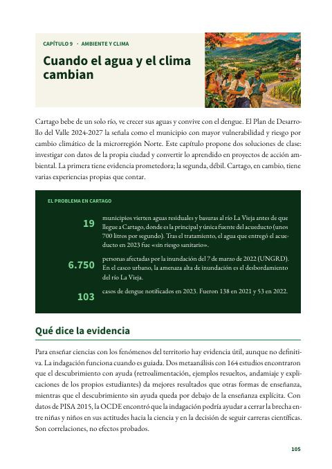
Pág. 105 · 2 págs.Cuando el agua y el clima cambianAlvaro Cardenas OrozcoCartago bebe de un solo río, ve crecer sus aguas y convive con el dengue.Leer →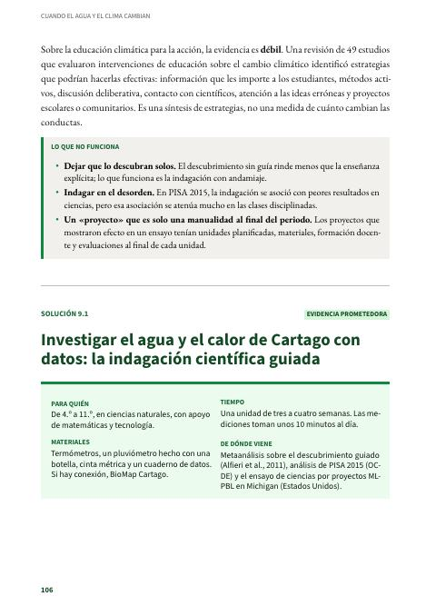
Pág. 106 · 5 págs.Investigar el agua y el calor de Cartago con datos: la indagación científica guiadaAlvaro Cardenas OrozcoEl curso investiga una pregunta sobre un fenómeno que vive. De 4.º a 11.º, en ciencias naturales, con apoyo de matemáticas y tecnología. Evidencia prometedora.Leer →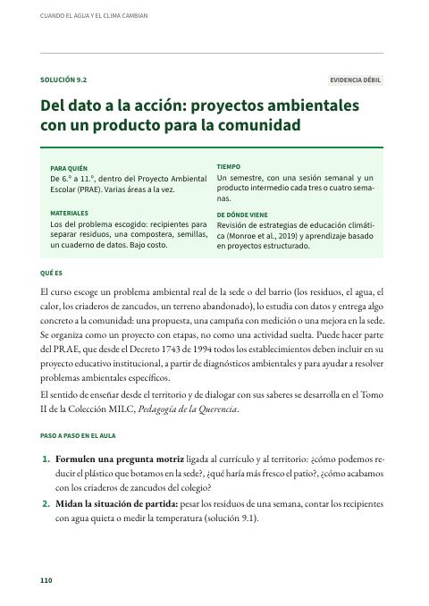
Pág. 110 · 4 págs.Del dato a la acción: proyectos ambientales con un producto para la comunidadAlvaro Cardenas OrozcoEl curso escoge un problema ambiental real de la sede o del barrio (los residuos, el agua, el calor, los criaderos de zancudos, un terreno abandonado), lo estudia con datos y entrega algo concreto a la comunidad. De 6.º a 11.º, dentro del Proyecto Ambiental Escolar (PRAE). Evidencia débil.Leer →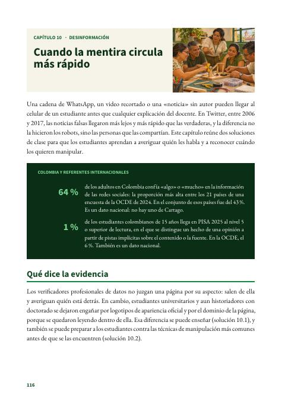
Pág. 116 · 2 págs.Cuando la mentira circula más rápidoAlvaro Cardenas OrozcoUna cadena de WhatsApp, un video recortado o una «noticia» sin autor pueden llegar al celular de un estudiante antes que cualquier explicación del docente.Leer →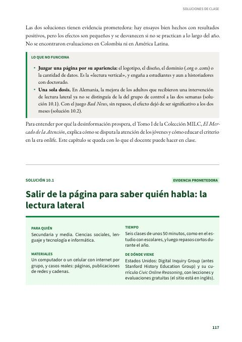
Pág. 117 · 4 págs.Salir de la página para saber quién habla: la lectura lateralAlvaro Cardenas OrozcoLa estrategia de los verificadores profesionales de datos. Secundaria y media. Evidencia prometedora.Leer →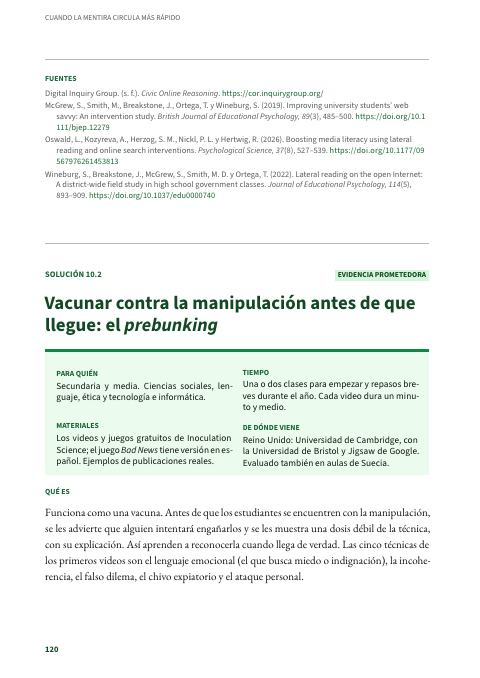
Pág. 120 · 3 págs.Vacunar contra la manipulación antes de que llegue: el prebunkingAlvaro Cardenas OrozcoFunciona como una vacuna. Antes de que los estudiantes se encuentren con la manipulación, se les advierte que alguien intentará engañarlos y se les muestra una dosis débil de la técnica, con su explicación. Secundaria y media. Evidencia prometedora.Leer →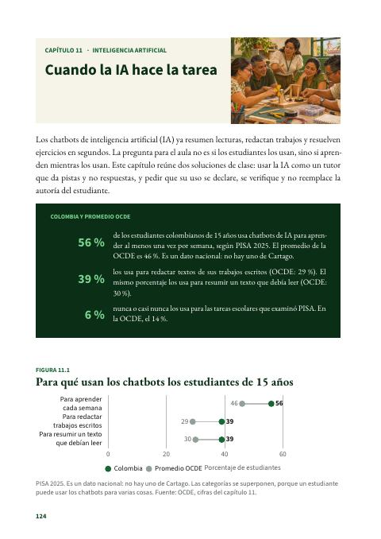
Pág. 124 · 3 págs.Cuando la IA hace la tareaAlvaro Cardenas OrozcoLos chatbots de inteligencia artificial (IA) ya resumen lecturas, redactan trabajos y resuelven ejercicios en segundos.Leer →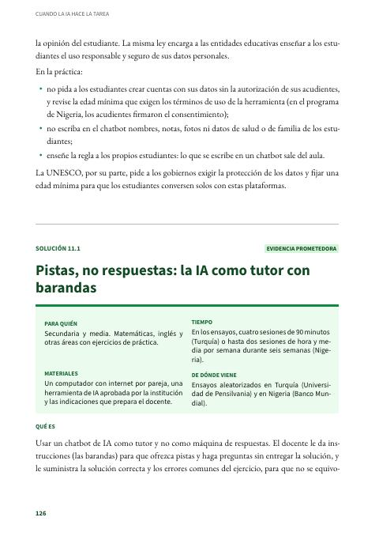
Pág. 126 · 4 págs.Pistas, no respuestas: la IA como tutor con barandasAlvaro Cardenas OrozcoUsar un chatbot de IA como tutor y no como máquina de respuestas. Secundaria y media. Evidencia prometedora.Leer →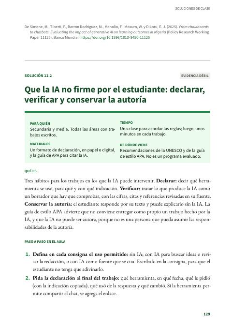
Pág. 129 · 3 págs.Que la IA no firme por el estudiante: declarar, verificar y conservar la autoríaAlvaro Cardenas OrozcoTres hábitos para los trabajos en los que la IA puede intervenir. Secundaria y media. Evidencia débil.Leer →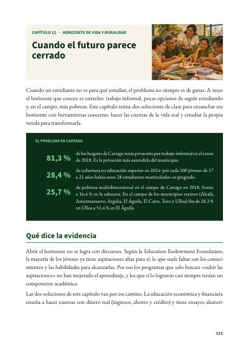
Pág. 133 · 3 págs.Cuando el futuro parece cerradoAlvaro Cardenas OrozcoCuando un estudiante no ve para qué estudiar, el problema no siempre es de ganas.Leer →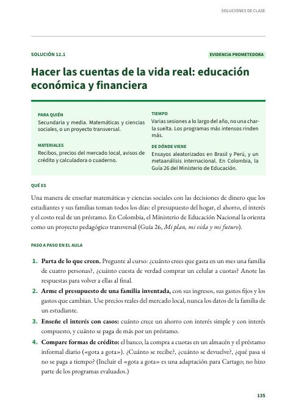
Pág. 135 · 4 págs.Hacer las cuentas de la vida real: educación económica y financieraAlvaro Cardenas OrozcoUna manera de enseñar matemáticas y ciencias sociales con las decisiones de dinero que los estudiantes y sus familias toman todos los días. Secundaria y media. Evidencia prometedora.Leer →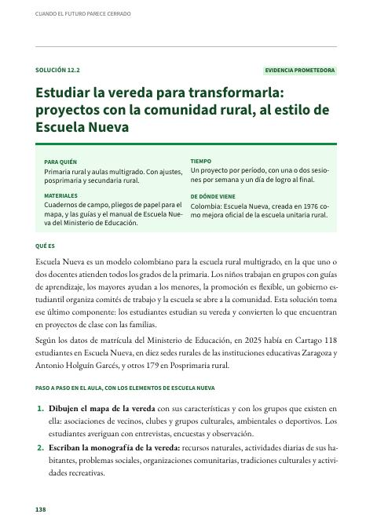
Pág. 138 · 4 págs.Estudiar la vereda para transformarla: proyectos con la comunidad rural, al estilo de Escuela NuevaAlvaro Cardenas OrozcoEscuela Nueva es un modelo colombiano para la escuela rural multigrado, en la que uno o dos docentes atienden todos los grados de la primaria. Primaria rural y aulas multigrado. Evidencia prometedora.Leer →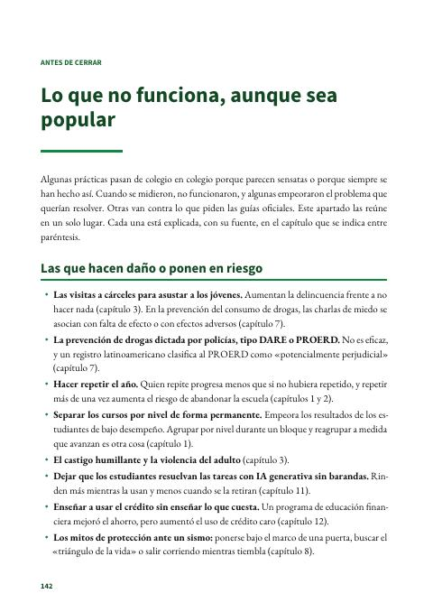
Pág. 142 · 3 págs.Lo que no funciona, aunque sea popularAlvaro Cardenas OrozcoAlgunas prácticas pasan de colegio en colegio porque parecen sensatas o porque siempre se han hecho así.Leer →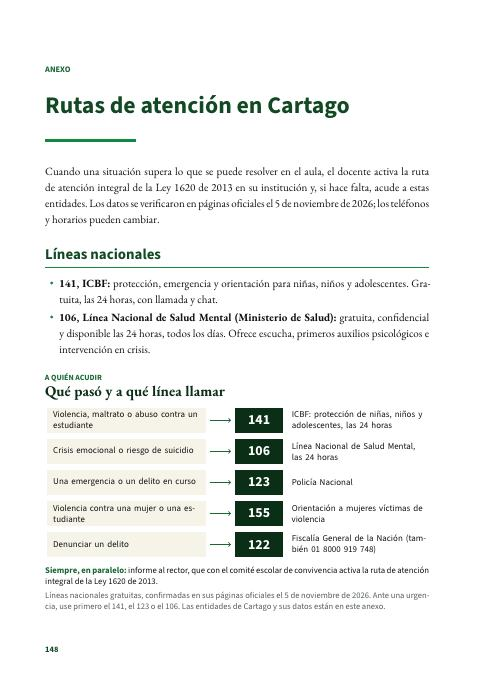
Pág. 148 · 3 págs.Rutas de atención en CartagoAlvaro Cardenas OrozcoCuando una situación supera lo que se puede resolver en el aula, el docente activa la ruta de atención integral de la Ley 1620 de 2013 en su institución y, si hace falta, acude a estas entidades.Leer →